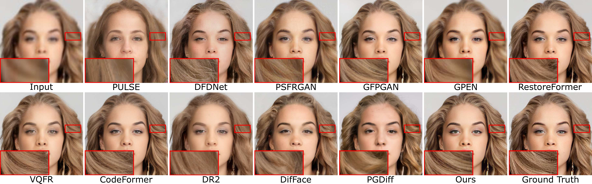

Diffusion priors have been used for blind face restoration (BFR) by fine-tuning diffusion models (DMs) on restoration datasets to recover low-quality images. However, the naive application of DMs presents several key limitations. (i) The diffusion prior has inferior semantic consistency (e.g., ID, structure and color.), increasing the difficulty of optimizing the BFR model; (ii) reliance on hundreds of denoising iterations, preventing the effective cooperation with perceptual losses, which is crucial for faithful restoration. Observing that the latent consistency model (LCM) learns consistency noise-to-data mappings on the ODE-trajectory and therefore shows more semantic consistency in the subject identity, structural information and color preservation, we propose InterLCM to leverage the LCM for its superior semantic consistency and efficiency to counter the above issues. Treating low-quality images as the intermediate state of LCM, InterLCM achieves a balance between fidelity and quality by starting from earlier LCM steps. LCM also allows the integration of perceptual loss during training, leading to improved restoration quality, particularly in real-world scenarios. To mitigate structural and semantic uncertainties, InterLCM incorporates a Visual Module to extract visual features and a Spatial Encoder to capture spatial details, enhancing the fidelity of restored images. Extensive experiments demonstrate that InterLCM outperforms existing approaches in both synthetic and real-world datasets while also achieving faster inference speed. Code and models will be publicly available.
Face Restoration (synthetic of CelebA-Test)
Face Restoration (real-world images from LFW-Test, WebPhoto-Test, and WIDER-Test)